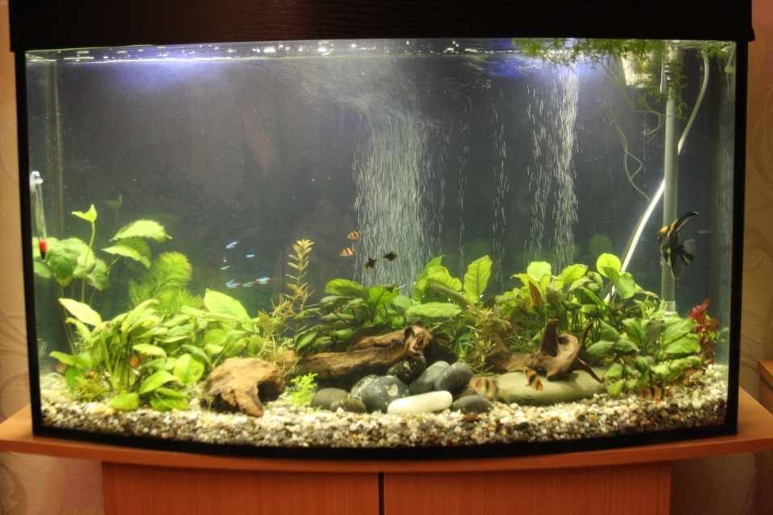

05.11.2017
Акваріум дістався несподівано. Його подарували! :) У шкільні роки тримав рибок и вважав себе за доволі досвідченого акваріуміста. 5 листопада акву перевезли. Ось що ми отримали: банку на 150 л брутто, фільтр Fluval 204, компресор. З жителів: рослини - анубіас та коричнева криптокорина, риби – суматранські барбуси 4 шт., SAE – 4 шт., мінор, неон блакитний, скалярія та анциструс. Кілька великих каменів гальки та 4 корча. Ну і грунт – суміш гальки та битих мушель(!). Мій внутрішній досвідчений акваріуміст проти такого ґрунту не виказав якихось заперечень.
Того ж дня засипав ґрунт, накидав каменів та корчів та посадив рослини. Води набрав з під крану. Рибу випустив у 20-ти літрову миску. Наступного дня нагуглив Аквафорум та зареєструвався – почав вивчати. Виявилося, що акваріумістика за час моєї відсутності з середини 80-х років 20 століття пішла да-а-а-леко вперед. Скільки нового! Але часу було обмаль – рибі у мисці було тісно, один SAE вночі вистрибнув. Тому наступного дня перевів її в акваріум. А за кілька днів, не втримались і купили з малими кілька барбусів та неонів. Плюс жовтих ампулярій. Все згідно моїх шкільних уподобань. Паралельно купив кілька рослин у Бахмута з аквафоруму.
Ось так це виглядало. І, що цікаво – спочатку мені вигляд зробленого сподобався, це вже пізніше почало приходити розуміння – що у такому стані акваріум УГ :)